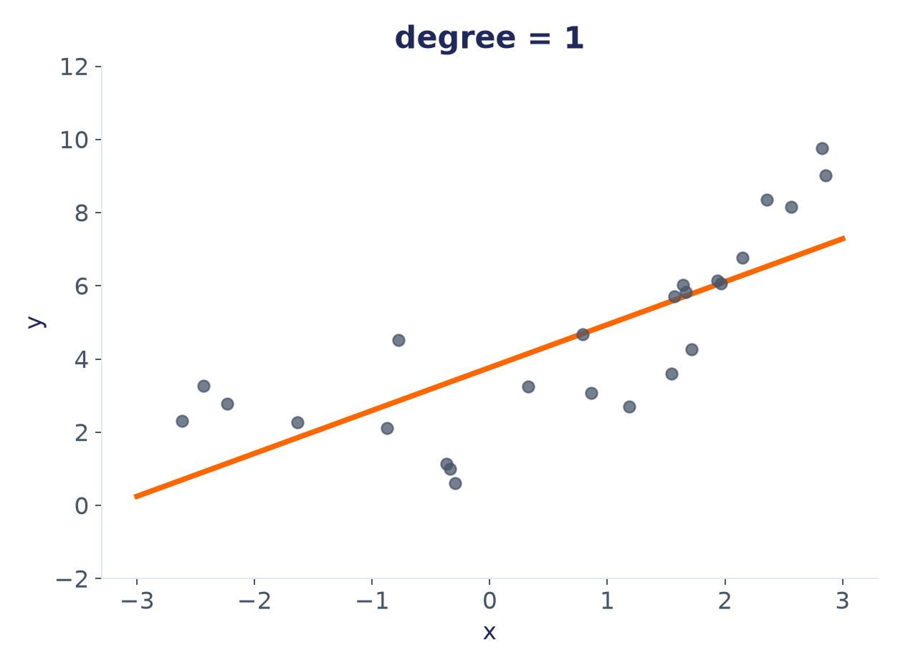
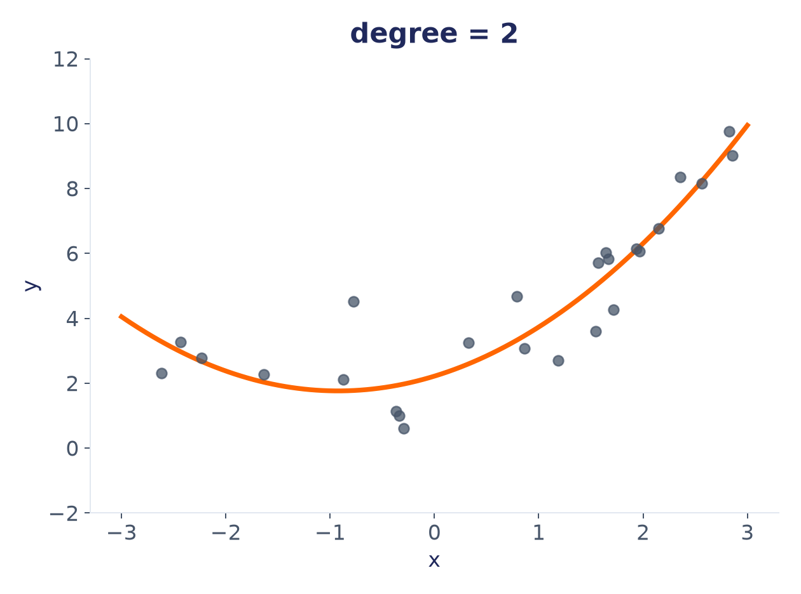
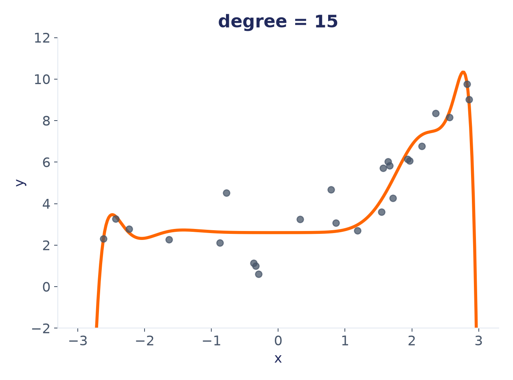
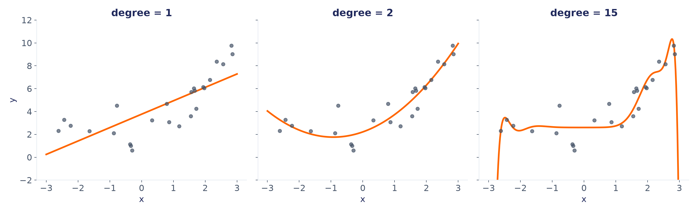

گاهی رابطهی بین x و y اصلاً خطی نیست.
اگر یک خط راست را به اجبار بر دادهای منحنیشکل برازش دهیم، مدل نتیجهی ضعیفی میدهد.
خط راست، نمیتواند به درستی نماینده یک منحنی باشد، هرچقدر هم داده زیادی در اختیار داشته باشد..
مفهوم کلیدی
ترفند: ویژگی جدید بساز، نه مدل جدید
در کنار x،
از x، x²، x³، ...
بهعنوان ویژگیهای جدید استفاده میکنیم:
ŷ = w₁·x + w₂·x² + w₃·x³ + ... + b
این مدل همچنان یک رگرسیون خطی است، چون نسبت به ضرایب (w₁, w₂, ...) خطی است،
فقط ورودیهایش دیگر x خام نیستند.
مفهوم کلیدی
دو مرحله، پشت سر هم
Step 1: Build new features: x, x², x³, ...
↓
Step 2: Run ordinary Linear Regression on them
هیچ الگوریتم جدیدی یاد نمیگیریم؛ فقط قبل از رگرسیون خطی معمولی، یک مرحلهی ساخت ویژگی اضافه میشود.
یادآوری
و w₁, w₂, w₃, ... چطور پیدا میشوند؟
دقیقاً همان جستوجوی کاسهمانندی که در بخش ۱ دیدیم، با همان دو روش
(Normal Equation یا Gradient Descent).
تنها تفاوت: حالا بهجای یک ویژگی خام x، چند ویژگی ساختهشده
(x, x², x³, ...) در کاسه شرکت میکنند.
از دید scikit-learn، هیچ فرقی با رگرسیون چندگانه ندارد.
مفهوم کلیدی
degree بهعنوان دستگیرهی پیچیدگی
degree = 1
همان خط راست (رگرسیون ساده)
degree = 2, 3
منحنی ملایم
degree = 15
منحنیای که دقیقاً از وسط تکتک نقاط رد میشود
درجه ۱
بیایید با degree = 1 شروع کنیم
همان خط راست همیشگی. روی این دادهی منحنیشکل، خیلی خوب عمل نمیکند.

درجه ۲
حالا درجه را به ۲ میرسانیم
با اضافهشدن x²، مدل میتواند منحنی بکشد. برازش، خیلی بهتر از قبل شده.

درجه ۱۵
و اگر درجه را خیلی بالا ببریم؟
با degree = 15، منحنی آنقدر آزاد میشود که از کنار تکتک نقاط رد میشود، حتی نقاطی که فقط نویز هستند.

دیدن نتیجه
همان داده، سه درجهی متفاوت، کنار هم

این دقیقاً همان جایی است که بحث بیشبرازش/کمبرازش شروع میشود.
اما قبل از آن، باید یاد بگیریم چطور عددی بگوییم مدل خوب است یا بد، نه فقط با چشم.